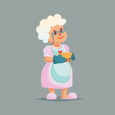

A história da Doces da Vovó começa em uma pequena cozinha, onde a dona da casa, Dona Maria, passava horas preparando suas receitas secretas para a família. Com mãos cuidadosas e um sorriso no rosto, ela fazia bolos e doces que se tornaram a alma de várias reuniões familiares, festas e momentos especiais. A paixão por fazer doces começou ainda na infância, quando aprendeu com sua mãe os segredos dos ingredientes simples, mas cheios de sabor. Com o passar dos anos, seus doces foram conquistando o paladar de todos que passavam pela sua casa, e logo seus amigos e vizinhos começaram a pedir para fazer encomendas para eventos e celebrações.
Foi assim que, em 2010, a família decidiu transformar essa paixão em um negócio. Surgiu, então, a Doces da Vovó, uma confeitaria que leva a tradição e o afeto das receitas caseiras a todos os seus clientes. A ideia era compartilhar com o mundo o sabor de um pedaço de história, onde cada ingrediente carrega um pouco da memória afetiva de gerações. A doceria, mantida com o mesmo carinho e dedicação de Dona Maria, cresceu e se tornou um espaço onde a qualidade e o sabor são os principais ingredientes, sempre acompanhados de uma boa dose de amor e nostalgia.
A filosofia da Doces da Vovó é simples: acreditar no poder do sabor para conectar pessoas e criar memórias. Valorizamos a autenticidade, o carinho e a tradição, e buscamos transmitir esses valores em cada doce que preparamos. Acreditamos que, ao resgatar as receitas de antigamente, conseguimos criar momentos de afeto e nostalgia, proporcionando aos nossos clientes mais do que uma simples sobremesa, mas uma verdadeira experiência de carinho e acolhimento. Nossa missão é continuar mantendo viva a tradição de uma confeitaria artesanal, onde cada doce é feito com ingredientes de qualidade, respeito pelo processo e, acima de tudo, amor — aquele amor que só uma receita de família pode ter.
